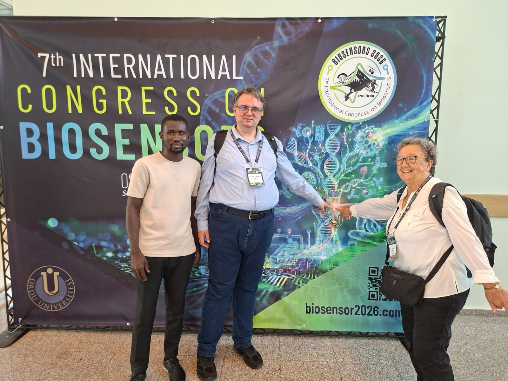
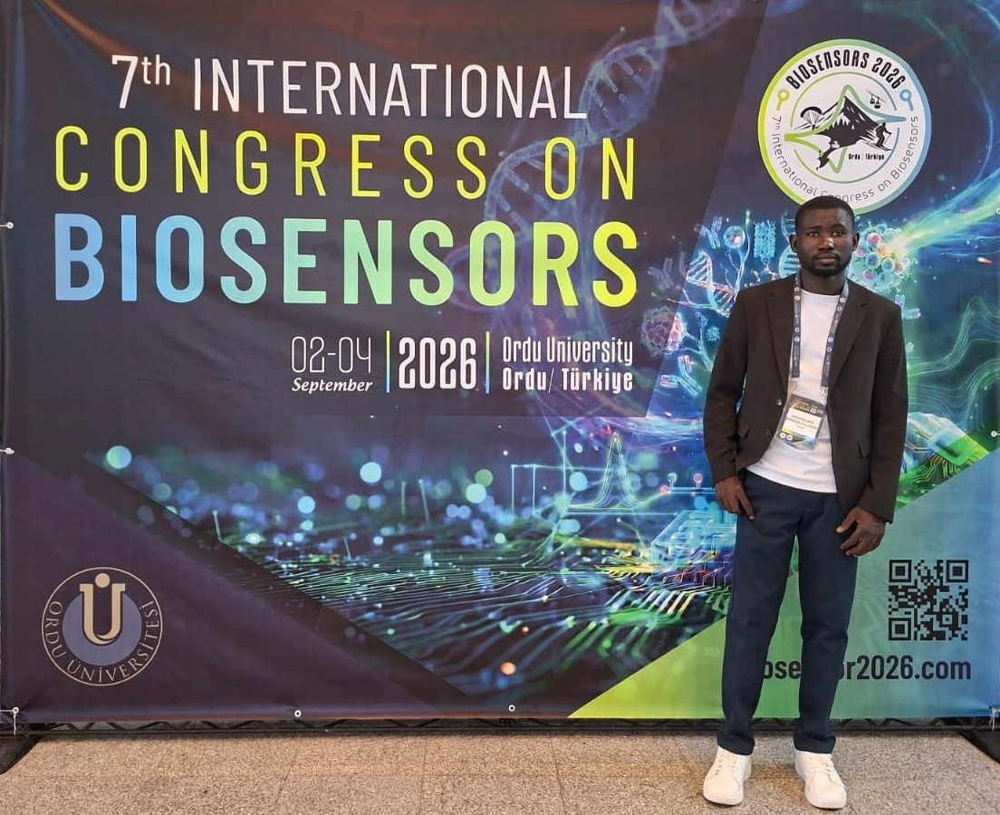
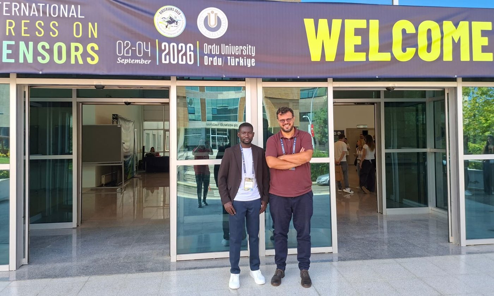
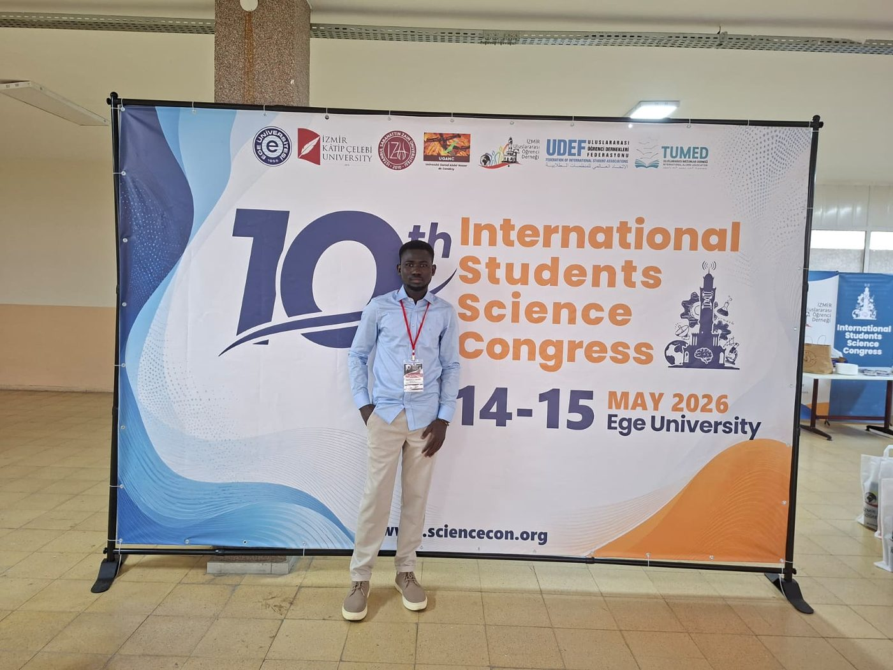
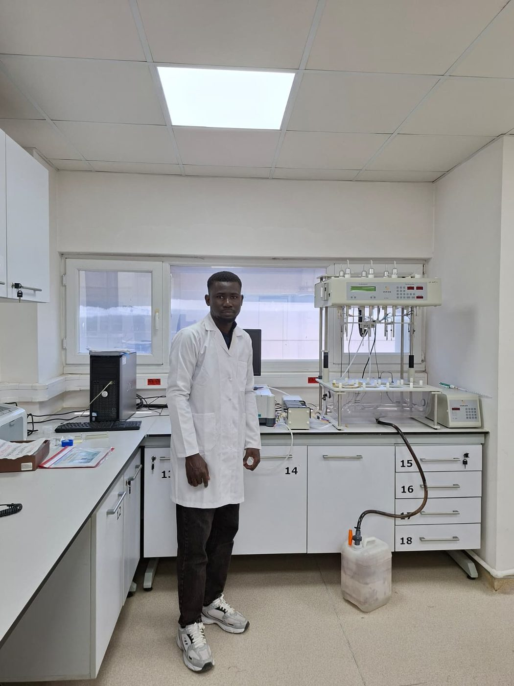

Sep 2026
Nanomaterial-Modified Pencil Graphite Electrodes for Enhanced Electrochemical Detection of DNA
7th International Congress on Biosensors (BIOSENSORS 2026), Ordu, Türkiye · 2–4 September 2026
Peer-reviewed articles, conference contributions, and recognitions related to electrochemical sensing and analytical method development.
Evaluation of Electrochemical Techniques for Heavy Metal Detection in Aqueous Media
doi.org/10.52460/issc.2025.052Review on Electrochemical Techniques for Heavy Metal Detection in Aqueous Media
Electrochemical determination of Hg(II) on a poly(Eriochrome blue black R) modified carbon paste electrode
doi.org/10.9734/irjpac/2023/v24i1801



